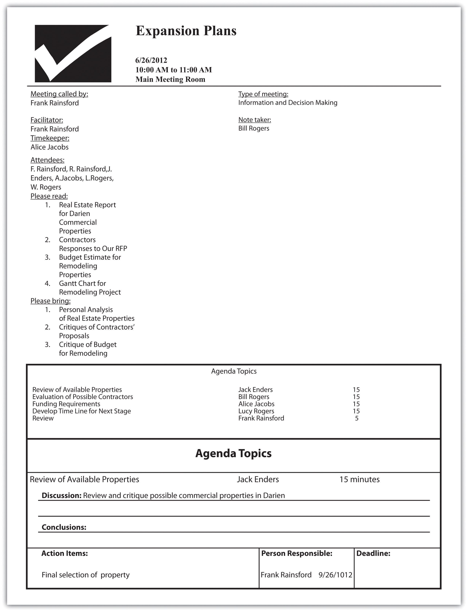

If you had to identify, in one word, the reason why the human race has not achieved, and never will achieve, its full potential, that word would be “meetings.”“Wanderings: Dave Barry Learned All This in 50 Years,” Brent Zupp, accessed February 6, 2012, www.wanderings.net/notebook/Main/ThingsLearn50YearsDaveBarry.
Dave Barry
Meetings are indispensable when you don’t want to do anything.Nancy Roman, “Meetings: How to Waste Time at Work,” Cornelius & Associates, accessed June 1, 2012, www.corneliusassoc.com/articles/Meetings%20waste%20time.pdf.
John Kenneth Galbraith
As a business grows, it will—in all probability—increase the number of its employees. As the employee base grows, there is increased demand to coordinate activities, exchange information, and engage in decision-making activities. These usually occur at meetings, and one would think that these would be straightforward events. Yet the reality is that many managers and employees come to dread participation at meetings. Data indicate that many, if not most, meetings fail to produce the desired outcome. A study conducted in 1993 found that executives were seen as a spending seventeen hours per week in meetings, and one-third felt that time was wasted.Roy Woodard, “Meetings, Bloody Meetings,” Credit Control 15, no. 5 (1993): 1. Another survey of thirty-eight thousand managers found that 66 percent felt that the meetings they attend were a waste of time.Robert F. Moran Jr., “Meetings: The Bane of the Workplace, It Doesn’t Have to Be,” Library Administration & Management 20, no. 3 (2006): 135–39, accessed February 6, 2012, journals.tdl.org/llm/article/view/1637/917. Still another study found that managers spend as much as 40 percent of their work time in meetings, but only 64 percent of those meetings were seen as achieving their intended outcome;Judith Lindenberger, “Make the Most of Your Meetings,” Office Solutions 24, no. 3 (2007): 40. another study found that executives were spending as much as 70 percent of their time at meetings, but only 40 percent of those meetings had clear objectives, and only 28 percent of those meetings with objectives actually met them.Stuart Levine, “Make Meetings Less Ready,” HR Magazine 52, no. 1 (2007): 107. Yet 80 percent of the participants viewed running a successful meeting as a crucial test of manager’s abilities.Stuart Levine, “Make Meetings Less Ready,” HR Magazine 52, no. 1 (2007): 107. These figures are particularly tragic because so many meetings occur in the business world. One estimate puts the number of meetings, on a daily basis, globally, at 73 million.Charlie Hawkins, “‘F’ Words for Effective Meetings,” Journal for Quality and Participation 22, no. 5 (1999): 56. These are rather depressing figures, but the clear lesson for small business owners is that they cannot afford the luxury of not running their meetings effectively.
The good news is that the successful management of a meeting is a learnable skill.Roy Woodard, “Meetings, Bloody Meetings,” Credit Control 14, no. 5 (1993): 1. Conducting an effective meeting requires that a manager focus on both procedural and behavioral issues. We will first look at procedural issues associated with running a meeting. Before considering holding a meeting, ask the following question: “Is this meeting really necessary?” Frequent meetings are sometimes held merely out of habit.Kelley Robertson, “How to Run an Effective Sales Meeting,” Changing Minds, June 7, 2009, accessed February 4, 2012, changingminds.org/articles/articles09/effective_sales_metting.htm. Can the goals of a meeting be achieved by other mechanisms?Stuart Levine, “Make Meetings Less Ready,” HR Magazine 52, no. 1 (2007): 107. These might include using the Internet; e-mail; teleconferencing; or technologies, such as MS Communicator, which allows for bulletin board interaction, voice communication, and videoconferencing. Interestingly, for all the complaints about meetings, a recent study indicated that face-to-face meetings were seen by 95 percent of those surveyed as being positive, especially in the interest of developing long-term relationships.Jay Boehmer, “Harvard Study Shows Face-to-Face Meeting Value, Rising Virtual Interest,” Successful Meetings, accessed February 6, 2012, www.successfulmeetings.com/Event-Planning/Technology-Solutions/Articles/Harvard-Study-Shows-Face-To-Face-Meeting-Value,-Rising-Virtual-Interest.
After deciding that a meeting is necessary, it is important to determine the nature of that meeting. Meetings may have many different types of goals. They can be directed to problem solving, decision making, conflict resolution, providing information, or generating new ideas.T. L. Stanley, “Make Your Meetings Effective,” SuperVision 67, no. 4 (2005): 6; Curt Smith, “Effective Meetings—Not an Oxymoron!” Manage 51, no. 1 (1999): 10. This is necessary because the nature of the meeting will drive its structure and internal dynamics. As an example, if a meeting is directed to a decision-making task, it should probably proceed in two parts. The first portion should be directed toward identifying solutions, while the second portion should focus on what might be the best solution.Robert F. Moran Jr., “Meetings: The Bane of the Workplace, It Doesn’t Have to Be,” Library Administration & Management 20, no. 3 (2006): 135–39, accessed February 6, 2012, journals.tdl.org/llm/article/view/1637/917. The next decision would be to determine who will participate in the meeting. Ideally, this list would be limited to those who would be directly affected by the outcome of the meeting; however, in the case of informational meetings, the list may be expanded to those who will be directly or indirectly affected. The next decision is associated with determining who will be assigned particular roles in the meeting. The chair is the individual who calls the meeting, provides the initial agenda, and specifies the purpose of the meeting. It may be useful to assign the role of facilitator to an individual. This neutral person can push the meeting along, particularly when conflict arises. It is desirable to have people trained as facilitators and rotate this position among facilitators.Charlie Hawkins, “‘F’ Words for Effective Meetings,” Journal for Quality and Participation 22, no. 5 (1999): 56. Another important role is the individual who is officially assigned to take notes. The notes of the meeting should be written up and sent to all participants in the meeting within two business days. This position should also be rotated among the participants of the meeting. It also might be advisable to assign the role of timekeeper to an individual. The timekeeper has the task of limiting the amount of time spent on anyone agenda item to the previously agreed-on time frame.Wayne Chaneski, “Productive Meetings—Back to Basics,” Modern Machine Shop 79, no. 11 (2007): 52, accessed February 6, 2012, www.mmsonline.com/columns/productive-meetingsback-to-basics.
Perhaps the most important activity prior to the actual meeting is the proper structuring of an agendaA document the outlines the purpose, membership, and required resources for an upcoming meeting.. In another study, 75 percent of those surveyed said that a good agenda is critical for a successful meeting.Judith Lindenberger, “Make the Most of Your Meetings,” Office Solutions 24, no. 3 (2006): 40. The agenda is the formal strategic plan for a meeting. It is the mechanism for ensuring that a meeting is focused on relevant topics. A failure to have a clear focus will guarantee that the participants will have a sense that nothing had been accomplished.Jim Sullivan, “Focused Agenda Can Energize Manager Meetings,” Nations Restaurant News 37, no. 5 (2003), accessed February 6, 2012, findarticles.com/p/articles/mi_m3190/is_5_37/ai_97392571. Focus stems from having everyone understand a meeting’s purpose and what one intends to achieve.Anonymous, “Running Meetings Effectively,” The British Journal for Administration Management, October/November 2005, 25. Items on the agenda should be prioritized in terms of their importance, which is often done by allocating a specific amount of time to each agenda item.Charlie Hawkins, “‘F’ Words for Effective Meetings,” Journal for Quality and Participation 22, no. 5 (1999): 56. Any and all resources that will be required for the meeting should be identified along with the individuals who are responsible for securing the resources. The roles of chair, timekeeper, note taker, and facilitator (where possible) should be assigned in advance. The agenda should be sent out at least five business days before the meeting so that participants can gather the required information. This timeline also allows for people to make suggestions for changing the agenda. It is also highly advisable to make it a policy that all participants arrive on time at the beginning of the meeting.Max Messner, “Conducting Effective Meetings,” Strategic Finance 82, no. 12 (2001): 8, accessed February 6, 2012, findarticles.com/p/articles/mi_hb6421/is_12_82/ai_n28842307.
Allowing individuals to contribute to the agenda will provide them with a sense that they are contributing.Kelley Robertson, “How to Run an Effective Sales Meeting,” Changing Minds, June 7, 2009, accessed February 4, 2012, changingminds.org/articles/articles09/effective_sales_metting.htm. In setting the timeline for the different items on the agenda, it is advisable that one allow for a few extra minutes at the end of the meeting to discuss how well the meeting went and how it could be improved.Charlie Hawkins, “‘F’ Words for Effective Meetings,” Journal for Quality and Participation 22, no. 5 (1999): 56. These few moments should be expanded into a formal system. Assessing meeting effectiveness can be done through an external observer conducting an evaluation, focus groups, or surveys.Joseph Allen, Steven Regelberg, and John Scott, “Mind Your Meetings,” Quality Progress, April 2008, 42, 4, 51. Figure 13.6 "Agenda Format" provides a format for a part of the overall agenda that addresses some of the previous suggestions. It is available as an agenda format wizard in Microsoft Word 2007.
Figure 13.6 Agenda Format
Business Management and Leadership Skills: How to Conduct an Effective Meeting
(click to see video)The basics of meeting management.
Conducting Effective Small Scale Meetings
(click to see video)How to conduct a meeting, even in one’s home.
How to Avoid Meetings That Suck
(click to see video)How to escape the traps behind bad meetings.
Managing Business Meetings
An excellent list of suggestions on business meetings.
www.cbsnews.com/8301-505125_162-51057051/managing-business-meetings/?tag=bnetdomain
Managing Your Meeting Monsters
Identifying the types of personalities at meetings.
www.impactfactory.com/p/business_meeting_skills_training_development/friends_111-1107-40530.html